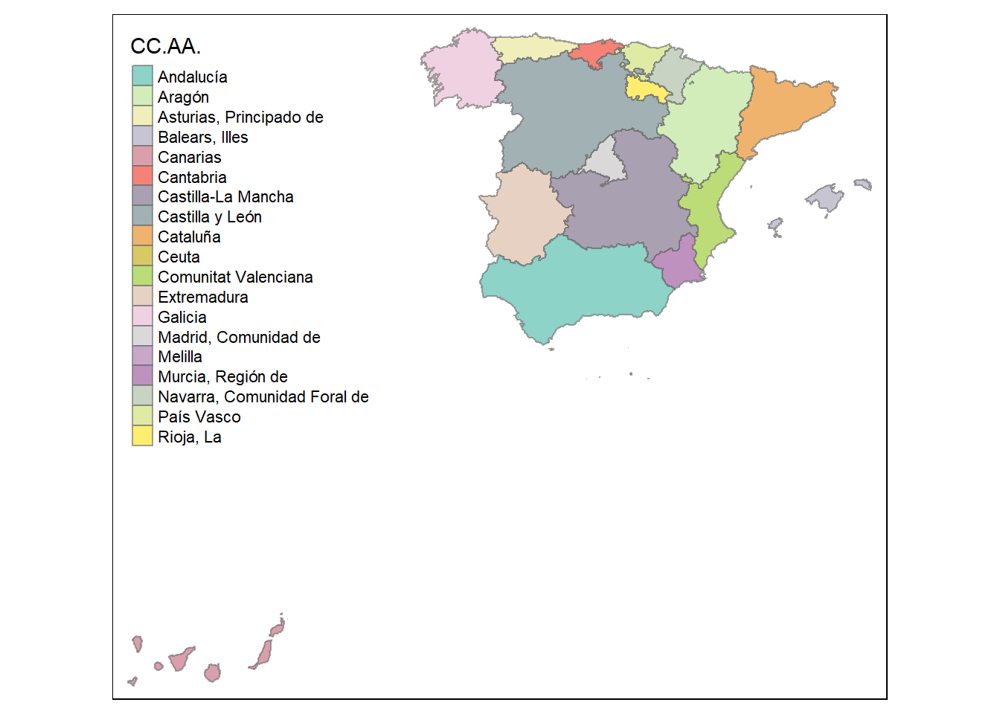
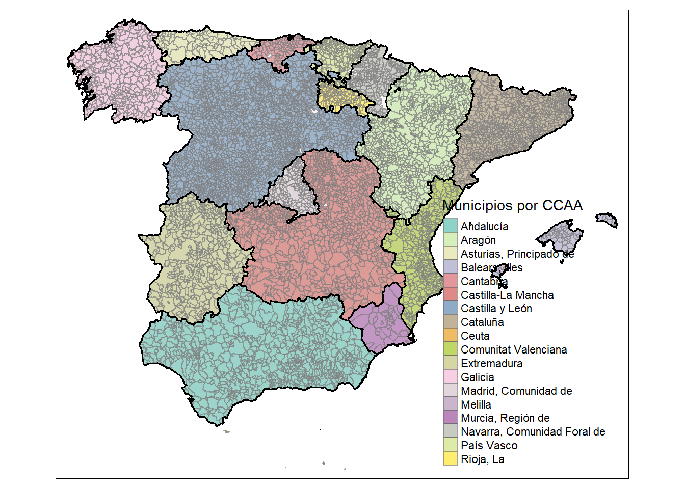

Intro to spanishRshapes package
Pedro J. Pérez
2018-02-06
spanishRshapes es un pacakge de datos. su unica finalidad es facilitar el uso de las geometrias espaciales para municipios, provincias y CC.AA españolas procedentes del IGN en R.
A continuación decribiré el proceso de descarga/procesado de los datos
Intro y descarga del IGN
Estoy jugando con un blog y estoy haciendo mapas de los municipios españoles, así que me he decidido a actualizar mi fichero de shapes. Para ello toca ir a la web del Instituto Geográfico Nacional, concretamente al centro de descargas. Una vez en el centro de descargas, hemos de ir a Información geográfica de referencia y luego a Lineas límite municipales. Trabajaré con los ficheros de “recintos”. Veamoslo:
Al pinchar en Descargar, se descarga un fichero zip. Yo lo descargué el 27 de enero de 2018. Al descomprimirlo aparecen muchas carpetas: lineas y recintos para municipios, provincias y CC. AA.; además Canarias va aparte. Veámoslo:

Trabajaré con los ficheros de “recintos”. Primero los recintos de las CC.AA.
Lindes de CC.AA.
En España hay dieciséis comunidades autónomas y una comunidad foral (Navarra), además de Ceuta y Melilla, cuyos estatutos de autonomía les otorgan el rango de ciudades autónomas; así que a partir de ahora diremos que hay 19 CC.AA.
Cargo los datos con el paquete sf.
#> Warning: package 'tidyverse' was built under R version 3.4.3
#> -- Attaching packages --------------------------------------------------------------- tidyverse 1.2.1 --
#> v ggplot2 2.2.1.9000 v purrr 0.2.4
#> v tibble 1.4.2 v dplyr 0.7.4
#> v tidyr 0.8.0 v stringr 1.2.0
#> v readr 1.1.1 v forcats 0.2.0
#> Warning: package 'tidyr' was built under R version 3.4.3
#> Warning: package 'purrr' was built under R version 3.4.3
#> Warning: package 'dplyr' was built under R version 3.4.2
#> -- Conflicts ------------------------------------------------------------------ tidyverse_conflicts() --
#> x dplyr::filter() masks stats::filter()
#> x dplyr::lag() masks stats::lag()
#> Warning: package 'sf' was built under R version 3.4.3
#> Linking to GEOS 3.6.1, GDAL 2.2.0, proj.4 4.9.3
#> here() starts at C:/Users/perezp/Desktop/a_GIT_2016a/spanishRshapeslibrary(tidyverse)
library(sf)
library(here)
aa <- paste0(here(), "./data_IGN/lineas_limite/recintos_autonomicas_inspire_peninbal_etrs89/recintos_autonomicas_inspire_peninbal_etrs89.shp")
ccaa_sf <- st_read(aa) #- 18 registros en Peninsula
aa <- paste0(here(), "./data_IGN/lineas_limite/recintos_autonomicas_inspire_canarias_wgs84/recintos_autonomicas_inspire_canarias_wgs84.shp")
ccaa_can_sf <- st_read(aa) #- 1 registo en CanariasComo ya dije los polígonos/shapes de Canarias van en fichero aparte y además resulta que están en coordinate reference system (CRS) diferentes. La península está en epsg (SRID): 4258 mientras que Canarias está en epsg (SRID): 4326; así que antes de fusionar los dos ficheros, transformaré el de Canarias con sf::st_transform():
ccaa_can_sf<- st_transform(ccaa_can_sf, 4258) #- convierto de epsg(SRID):4326 a epsg(SRID): 4258Bien, sólo queda unir los dos conjuntos de shapes, lo haré con rbind(..., deparse.level = 1)
#- para unirlos hay q usar rbind(..., deparse.level = 1)
ccaa_todas <- rbind(ccaa_sf, ccaa_can_sf, deparse.level = 1) #- 19 registrosBueno, ya tengo en un único objeto (ccaa_todas) los shapes de las 19 CC.AA en el mismo CRS, sólo quedaría grabarlo en formato .rds; pero antes quiero añadirle los códigos INE para las CC.AA. Para ello, primero he de sacar el código de la CC.AA de la variable NATCODE:
ccaa_todas <- ccaa_todas %>% mutate(INECodCCAA = str_extract(NATCODE, "^(....)")) #- extraigo los 4 primeros caracteres de NATCODE
ccaa_todas <- ccaa_todas %>% mutate(INECodCCAA = str_extract(INECodCCAA, "(..)$")) #- extraigo los 2 ultimos caracteres de INECodCCAACargo los códigos del INE para las CC.AA y fusiono con los shapes:
# devtools::install_github("perezp44/pjppkgRdata01") #- personal pkg
library(pjppkgRdata01) #- personal pkg
INE_prov <- cod_provincias
INE_prov <- INE_prov %>% select(CODAUTO, CCAA) %>% distinct()
INE_prov <- INE_prov %>% rename(INECodCCAA = CODAUTO)
INE_prov <- INE_prov %>% rename(NombreCCAA = CCAA)
IGN_CCAA_17 <- left_join(ccaa_todas, INE_prov) %>% select(INECodCCAA, NATCODE, NAMEUNIT, NombreCCAA, everything())
IGN_CCAA_17s <- IGN_CCAA_17 %>% select(INECodCCAA, NATCODE, NombreCCAA, geometry)He creado dos objetos que guardaré después en el package que voy a crear: IGN_CCAA_17 con 19 filas (una por C.A) y 11 columnas (está toda la información de los ficheros del IGN) y IGN_CCAA_17s (s significa “short”) donde solo dejo 4 columnas (INECodCCAA, NATCODE, NombreCCAA, geometry).
Para ver si lo he hecho ok, hagamos un gráfico
library(tmap)
library(spanishRshapes)
aa <- IGN_CCAA_17s %>% select(NombreCCAA)
grafico <- tm_shape(aa, alpha = 0.3) +
tm_fill(col = "NombreCCAA", title = "CC.AA.") +
tm_polygons(border.alpha = 0.6) +
tm_layout(legend.position = c("left", "top"))
grafico
Lindes provinciales
Bien, ahora toca arreglar los ficheros con los polígonos de lindes provinciales.
Cargamos los datos, saldrán 50 filas en el fichero de polígonos peninsulares y 2 en Canarias:
aa <- paste0(here(), "./data_IGN/lineas_limite/recintos_provinciales_inspire_peninbal_etrs89/recintos_provinciales_inspire_peninbal_etrs89.shp")
prov_sf <- st_read(aa) #- 50 registros en Peninsula
aa <- paste0(here(), "./data_IGN/lineas_limite/recintos_provinciales_inspire_canarias_wgs84/recintos_provinciales_inspire_canarias_wgs84.shp")
prov_can_sf <- st_read(aa) #- 2 registos en CanariasTransformamos el CRS de canarias y unimos península y Canarias:
prov_can_sf<- st_transform(prov_can_sf, 4258) #- convierto de epsg(SRID):4326 a epsg(SRID): 4258
#- para unirlos hay q usar rbind(..., deparse.level = 1)
prov_todas <- rbind(prov_sf, prov_can_sf, deparse.level = 1) #- 52 registrosExtraigo códigos provinciales de la variable NATCODE:
# NATCODE de la provincia de Teruel es 34024400000
prov_todas <- prov_todas %>% mutate(INECodProv = str_extract(NATCODE, "(.......)$")) #- extraigo los 7 ultimos caracteres de NATCODE
prov_todas <- prov_todas %>% mutate(INECodProv = str_extract(INECodProv, "^(..)")) #- extraigo los 2 primeros caracteres de INECodProvFusiono con códigos provinciales del INE:
INE_prov <- cod_provincias
INE_prov <- INE_prov %>% rename(INECodProv = CPRO)
INE_prov <- INE_prov %>% rename(NombreProv = PROVINCIA)
INE_prov <- INE_prov %>% rename(INECodCCAA = CODAUTO)
INE_prov <- INE_prov %>% rename(NombreCCAA = CCAA)
IGN_prov_17 <- left_join(prov_todas, INE_prov) %>% select(INECodProv, NATCODE, NAMEUNIT, NombreProv, NombreCCAA, everything())
IGN_prov_17s <- IGN_prov_17 %>% select(INECodProv, NATCODE, NombreProv, INECodCCAA, NombreCCAA, geometry)Un gráfico con los lindes provinciales:
library(tmap)
aa <- IGN_prov_17s %>% select(NombreProv)
grafico <- tm_shape(aa, alpha = 0.3) +
tm_fill(col = "NombreProv", title = "Provincias") +
tm_polygons(border.alpha = 0.6) +
tm_layout(legend.position = c("left", "top"))
graficoLindes municipales
Toca arreglar los ficheros con los polígonos de lindes municipales.
Cargamos los datos. Saldrán 8117 filas en el fichero de polígonos peninsulares y 94 en Canarias:
aa <- paste0(here(), "./data_IGN/lineas_limite/recintos_municipales_inspire_peninbal_etrs89/recintos_municipales_inspire_peninbal_etrs89.shp")
mun_sf <- st_read(aa) #- 50 registros en Peninsula
aa <- paste0(here(), "./data_IGN/lineas_limite/recintos_municipales_inspire_canarias_wgs84/recintos_municipales_inspire_canarias_wgs84.shp")
mun_can_sf <- st_read(aa) #- 2 registos en CanariasTransformamos el CRS de Canarias y unimos península con Canarias.
mun_can_sf<- st_transform(mun_can_sf, 4258) #- convierto de epsg(SRID):4326 a epsg(SRID): 4258
#- para unirlos hay q usar rbind(..., deparse.level = 1)
mun_todas <- rbind(mun_sf, mun_can_sf, deparse.level = 1) #- 8211 registrosSalen 8211 filas. Demasiados!!no hay tantos municipios en Spain!! Lo sé porque hace poco lo he mirado en el INE: en el último fichero que hay en el INE, a 1 de enero de 2017 habían en España 8124 municipios. ¿Por qué hay tantos shapes/polígonos/geometrías en el ING? No soy un experto, pero … cerca de mi despacho tengo uno que sí lo es y mirando uno de sus libros aquí se puede leer (en la página 311):
La unidad terrotorial básica … es el municipio; sin embargo, se incluyen 84 dominios … que se administran por dos o más ayuntamientos, son los denominados condominios o territorios mancomunados. Tienen un caracter marcadamente historico …. y se concentran en las provincias de Burgos y Navarra.
En el libro se dice que hay 84 condominios, pero actualmente sólo hay 81. Se pueden identificar a través de la variable NATCODE. El NATCODE de mi pueblo es 34024444177; los últimos 5 dígitos conforman el código INE para mi pueblo: 44177, cuyos 2 primeros dígitos son el código provincial del INE. Bien, pues los territorios mancomunados tienen un código provincial en NATCODE de 53. Podríamos verlos con:
# NATCODE de Pancrudo es 34024444177 filter(NATCODE == 34024444177)
# INECodMuni de Pancrudo es 44177 (o sea, unirlos x los 5 ultimos codigos)
mun_todas <- mun_todas %>% mutate(INECodMuni = str_extract(NATCODE, "(.....)$")) #- extraigo los 5 ultimos caracteres de NATCODE
condominios <- mun_todas %>% filter(str_detect(INECodMuni, "^53")) #- 81 shapes q empiezan x 53
no_condominios <- mun_todas %>% filter(!str_detect(INECodMuni, "^53")) #- 8130 shapes q NO empiezan x 53 (sobran 6 q tienen q ver con los 6 municipios de la Gomera q tienen 2 rows)Vamos a ver donde están los territorios mancomunados o condominios:
virpalette <- c("#E41A1C", "white")
mun_xx <- mun_todas %>% mutate(Si_condo = ifelse(str_detect(INECodMuni, "^53"), "Condominio", "No"))
mun_xxx <- mun_xx %>% filter(!(str_detect(INECodMuni, "(^38)|(^35)"))) #- quito Canarias
ccaa_todas_xxx <- ccaa_todas %>% filter(!(str_detect(INECodCCAA, "^05"))) #- quito Canarias
map_condominios <- tm_shape(mun_xxx, alpha = 0.3) +
tm_fill(col = "Si_condo", palette = virpalette, title = "Territorios mancomunados") +
tm_polygons(border.alpha = 0.6) +
tm_layout(legend.position = c("right", "bottom"))
map_condominios <- map_condominios + tm_shape(ccaa_todas_xxx, alpha = 0.2) + tm_polygons(lwd = 1.8, border.col = "black", alpha = 0.2)
map_condominiosNo se ven muy bien, pero sí, están concentrados en las provincias de Burgos y Navarra. El condominio más grande son las Bardenas Reales en Navarra. Según la Wikipedia:
El territorio de las Bardenas no pertenece a ningún municipio, con excepción de El Vedado de Eguaras que pertenece al municipio de Valtierra. El resto fue propiedad de la corona, de ahí el apelativo de Reales y en la actualidad es de dominio público siendo propiedad del gobierno de Navarra.
Los 81 condominios no los voy a quitar, como se pueden filtrar fácilmente los dejaré; PERO es que hay un segundo problema: si quitamos los 81 condominios nos quedarían 8.130 filas/polígonos geometrías, cuando sólo hay 8124 municipios, sobran 6 filas!!!
Después de tirarme de los pelos, descubrí que las seis filas “sobrantes” se debían a que habían seis municipios que tenían dos filas; concretamente esto ocurría en los 6 municipios que tiene la isla de La Gomera.
Mirando un poco más vi que cada uno de los 6 municipios de la Gomera tenía una row para el territorio del municipio en la isla de la Gomera y otro para una serie de “islitas” fuera de la isla de La Gomera; así que tenía varias posibilidades:
fusionar esas dos shapes (para cada uno de los 6 municipios)
eliminar las 6 rows con las islitas de La Gomera,
cambiarles el código provincial y dejarlas en el fichero.
Al final decidí cambiar el código provincial (de las 6 rows con las islitas de La Gomera) para poder filtralas facilmente pero tenerlas en el fichero per si de cas. Lo hago con el chunk de abajo:
#- identifiqué las rows donde estaban las islitas alrededor de La Gomera
islitas_Gomera <- c(8156L, 8158L, 8177L, 8193L, 8207L, 8209L) #- están son las 6 rows que voy a poner q su 38 de INECodMuni pase a ser 66
mun_todas <- mun_todas %>% mutate(INECodMuni = str_extract(NATCODE, "(.....)$")) #- extraigo los 5 ultimos caracteres de NATCODE
for (i in islitas_Gomera) {
mun_todas$INECodMuni[i] <- str_replace(mun_todas$INECodMuni[i] ,"38", "66")
}Fusionar con el fichero de códigos INE:
INE_mun <- cod_muni_pjp_17 #- 8124 municipios (1-enero-2017)
IGN_mun_17 <- left_join(mun_todas, INE_mun) %>% select(INECodMuni, NATCODE, NAMEUNIT, NombreMuni, NombreProv, NombreCCAA, everything())
IGN_mun_17s <- IGN_mun_17 %>% select(INECodMuni, NATCODE, INECodProv, INECodCCAA, NombreProv, NombreCCAA, geometry)Un gráfico con los lindes municipales:
library(tmap)
aa <- IGN_mun_17s %>% select(NombreCCAA) %>% filter(NombreCCAA != "Canarias")
grafico <- tm_shape(aa, alpha = 0.3) +
tm_fill(col = "NombreCCAA", title = "Municipios por CCAA") +
tm_polygons(border.alpha = 0.6) +
tm_layout(legend.position = c("right", "bottom"))
quitar <- c("Canarias", "Ceuta", "Melilla")
bb <- IGN_CCAA_17s %>% select(NombreCCAA) %>% filter(!(NombreCCAA %in% quitar))
grafico <- grafico + tm_shape(bb, alpha = 0.2) + tm_polygons(lwd = 1.8, border.col = "black", alpha = 0.2)
grafico